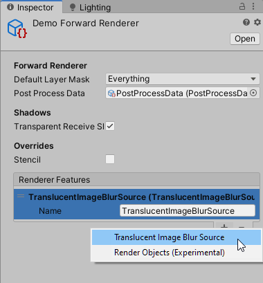
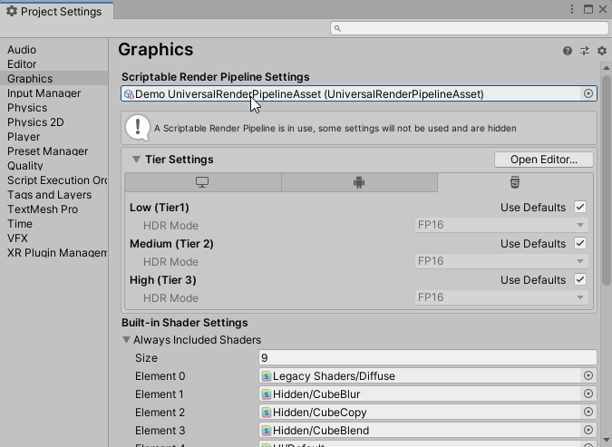
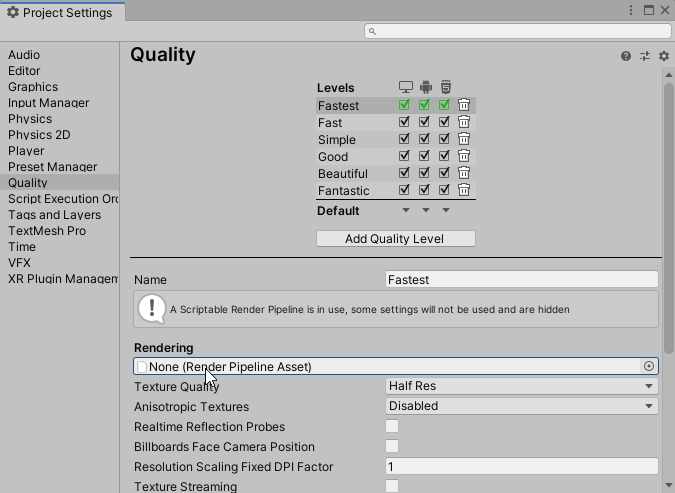
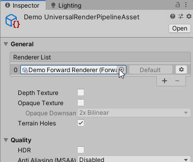

Universal Render Pipeline
Requirements
The URP support package is tested on URP version 7.1.7 and Unity 2019.3.
The files required for URP support can be found by importing the unitypackage at: TranslucentImage/UniversalRP support. They are not included by default as they would produce errors for projects not using URP.
Tutorial
Import the package at
TranslucentImage/UniversalRP support.Find your Forward Renderer Assets, and add TranslucentImageBlurSource to the list of Renderer Features, you may have more than 1:

Note
You may have multiple Forward Renderer Assets. In which case you have to add the Renderer Feature to all of them.
Finding the Forward Renderer Assets
You can find the Forward Renderer asset(s) you're using by finding the Render Pipeline Settings asset in Graphic Settings:

You may also have more Quality Setting. Be sure to check all Quality Levels:

Double click the field under the cursor in the above images will take you to the Render Pipeline Settings asset, where you can find your Forward Renderer asset(s) in the list of Renderer:

Limitations
URP does not yet support multiple cameras stacking on each other. Consequently, stacking multiple blur layers for Translucent Images is also not available. Unity does have this functionality planned.
Some demo scene does not work with URP. There a demo scene dedicated for URP under
TranslucentImage/Demo/UniversalRP, after you import the support package.